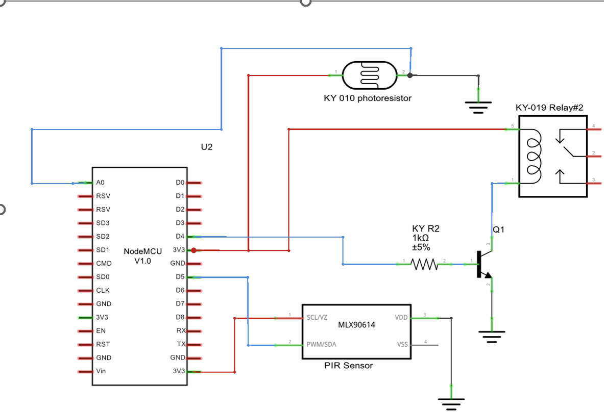

DevOps / Network Infrastructure & Backend
 mirulqayyum@outlook.com |
mirulqayyum@outlook.com |
 Github:
AtechPro |
Github:
AtechPro |  01170745731
01170745731
Microsoft(R) Windows 98
(C)Copyright Microsoft Corp 1981-1999.
C:\> WORK_EXPERIENCE.EXE
> Field Engineer — I Seen Technology Sdn BHD
[April 2026 - May 2026]
- Installed and configured AV systems, PCs, and related IT equipment across multiple client sites, while performing troubleshooting and preventive maintenance to replace inconsistent manual support with structured on-site technical service.
- Executed field installations, preventive maintenance, and troubleshooting assignments across diverse locations, producing daily technical reports for completed PM, installation, and issue resolution activities to improve service tracking and operational accountability.
- Coordinated directly with site stakeholders and higher-level personnel to negotiate scheduling, manage unpredictable travel demands, and ensure timely task completion across multiple deployment environments.
> Full Stack Developer Intern — Lenog Plant Service SDN BHD
[Mar 2025 - Aug 2025]
- Developed and deployed a full-stack Letter Generation System (Flask, JavaScript, Docker, Linux/DigitalOcean) to replace manual Word-based workflows, improving document standardization, reducing processing time, and increasing operational efficiency.
- Built and deployed a mobile-responsive Valve Reporting System (Flask, JavaScript, Docker, Caddy, Linux) to digitize manual field reporting, improving reporting accuracy, accessibility, and field data collection efficiency.
- Managed NAS-to-SSD on-premise backup processes to ensure data integrity and business continuity, while researching cloud-based backup solutions to support future scalability and disaster recovery planning.
C:\> _
Items in Recycle Bin:
 Manual_Workflow.md (0 KB)
Manual_Workflow.md (0 KB)
 ego_centric.log (0 KB)
ego_centric.log (0 KB)
 Yokoso Watashi no Portfolio Website
Yokoso Watashi no Portfolio Website
 Who This? Sepa Ni?? だれですが？ 是谁呢？🤔
Who This? Sepa Ni?? だれですが？ 是谁呢？🤔
My Name is Amirul Qayyum Si Kambar, Some would call me AtechPro, Well i Im a Network Engineer Graduate where I also extend myself into DevOps.

Centralized Hub Home Automation Schematic Diagram - 1st Module preview